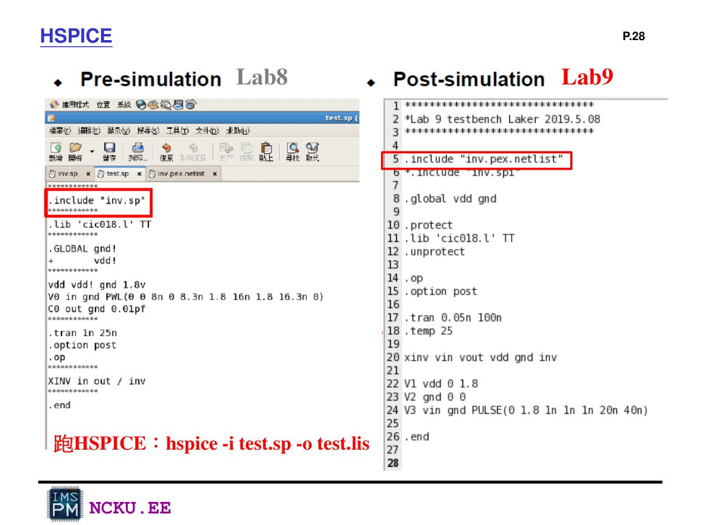
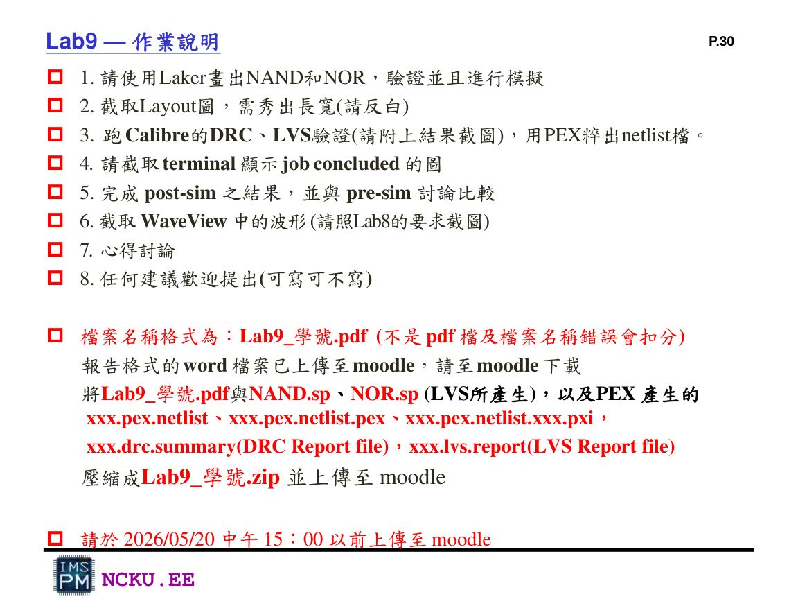
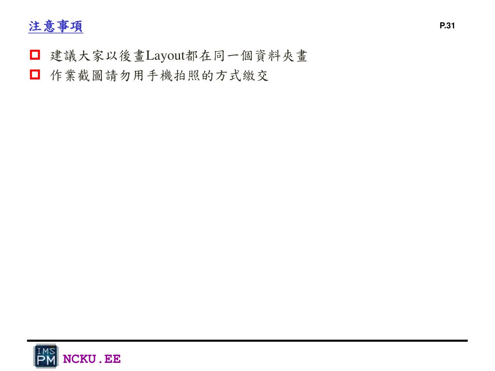

Post-simulation 與 Pre-simulation 比較
PEX 產生含寄生 RC 的 netlist 後，用 HSPICE 再跑一次。這就是 post-layout simulation，結果比 Lab8 pre-sim 更接近實際晶片。
一、Pre-sim 與 Post-sim 的差異
| 項目 | Pre-sim | Post-sim |
|---|---|---|
| 使用檔案 | Lab8 的理想 transistor netlist | PEX 抽出的 layout netlist |
| 是否含寄生 | 通常不含或較簡化 | 含 layout 產生的寄生 R / C / coupling C |
| 波形特徵 | 切換較理想、延遲較小 | 可能有較大 delay、rise/fall 較慢 |
| 報告重點 | 確認邏輯正確 | 確認 layout 後仍邏輯正確，並討論 delay 差異 |

Lab9 講義示範：pre-sim include inv.sp；post-sim include PEX netlist。
二、post-sim testbench 範例
*========================================================
* nand_post_tb.sp - Lab9 PEX post-simulation example
* 請依 PEX 實際產生的檔名與 subckt 腳位順序調整
*========================================================
.INC 'nand.pex.netlist'
.GLOBAL gnd
+ vdd
.protect
.lib './cic018/model/cic018.l' TT
.unprotect
.op
.options post
.temp 25
.tran 0.05n 160n
VDD vdd gnd DC 1.8v
VGND gnd 0 DC 0v
VA A gnd PULSE(0 1.8 0 0.1n 0.1n 20n 40n)
VB B gnd PULSE(0 1.8 0 0.1n 0.1n 40n 80n)
* 假設 PEX netlist 中 subckt 名稱為 nand，腳位為 A B out_2 vdd gnd
XNAND_POST A B out_2 vdd gnd nand
.end
三、執行 script 範例
#!/bin/bash
# Lab8 / Lab9 simulation helper
set -e
# Lab8 pre-sim
hspice testbench.sp -o lab8_pre.lis
# Lab9 post-sim examples
# hspice -i nand_post_tb.sp -o nand_post.lis
# hspice -i nor_post_tb.sp -o nor_post.lis
# Open WaveView
wv &
四、比較報告可以這樣寫
由 pre-sim 與 post-sim 波形比較可知，NAND / NOR 在 layout 後仍符合原本邏輯功能。差異主要出現在切換邊緣與 propagation delay：post-sim 因為 PEX netlist 加入金屬走線、接觸孔與元件周圍的寄生電阻電容，因此輸出上升與下降時間可能比 pre-sim 稍慢。若波形邏輯仍正確且延遲差異合理，代表 layout 設計與驗證結果可接受。
五、Lab9 報告格式要求

Lab9 講義要求：layout 截圖、DRC/LVS、PEX、terminal job concluded、WaveView、pre/post 比較。

注意：截圖請使用電腦截圖，不要用手機拍照。